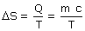

Variación de entropía en un cambio de fase
En un cambio de fase se intercambia calor a temperatura cons-tante:

m
Masa del sistema
c
Calor latente de cambio de fase
T
Temperatura absoluta en el cambio de fase